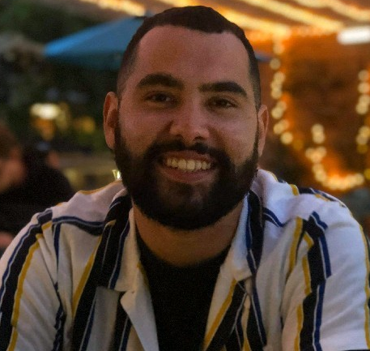
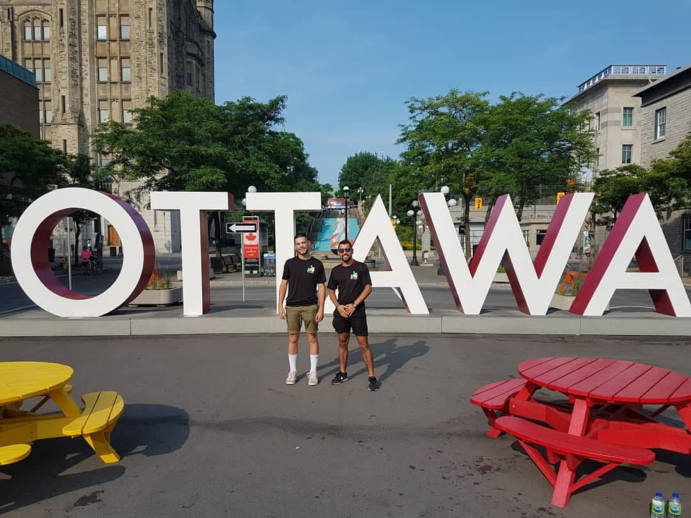

🔥Hello, I'm Théo !🔥

Special Risk Business Development Manager at Atlantique Automatismes Incendie (AAI).
I am also studying sales management at Audencia. I accompany you in your fire protection projects in special risks :
For any information or request you can send me an email t.cabaz@aai-france.fr. Discover AAI
Business Developpment 📊 and Fire Safety 🔥
Through multiple tasks, I was able to gain experience as a business development manager in B-to-B, learn how to meet the technical and specific requirements of professional customers and find a solution adapted to their needs. I have mainly worked in the fire safety field, accompanying major industrial accounts in their fire safety projects.
Tattoo 
I am passionate about Tattoo.I have always been interested in tattooing. I like very much Japanese neotraditional tattoos ⛩ , old school, neotrad.
Travel ✈️
I like to travel a lot, I went to Italy, Germany, England but also to the United States and Canada for 2 months.
